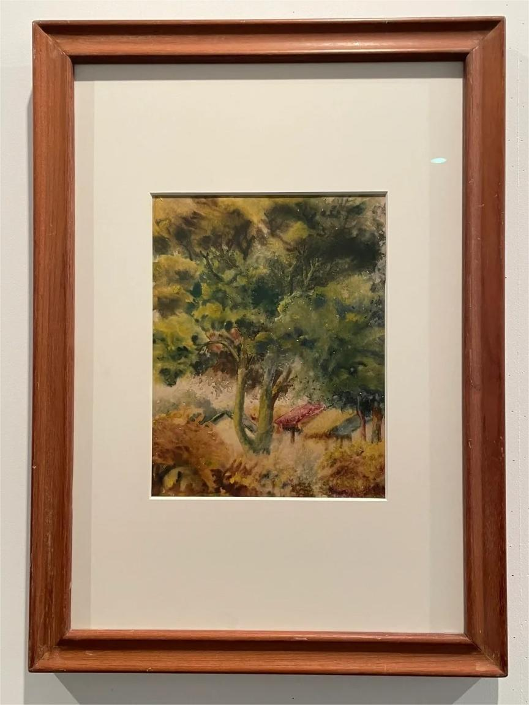
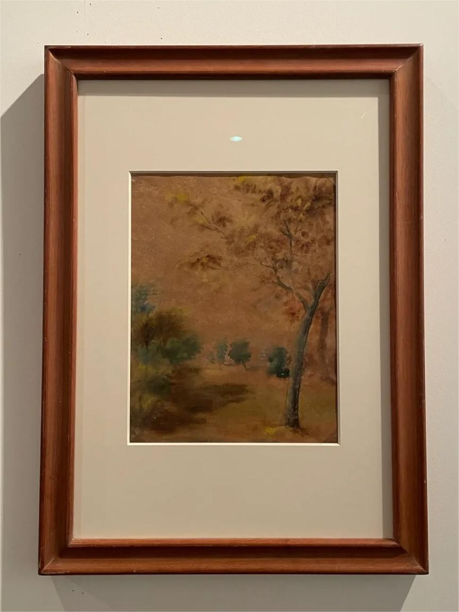
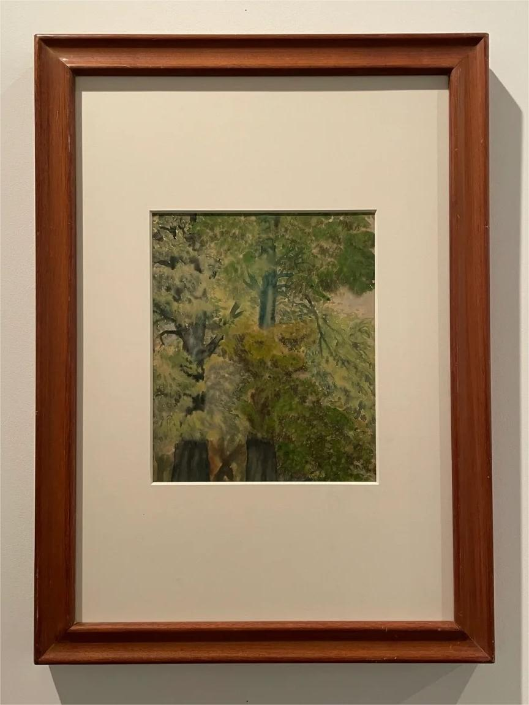
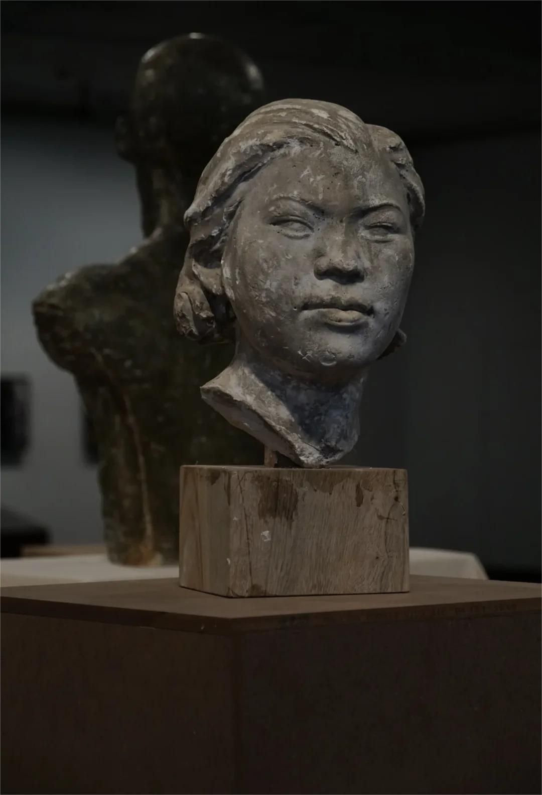
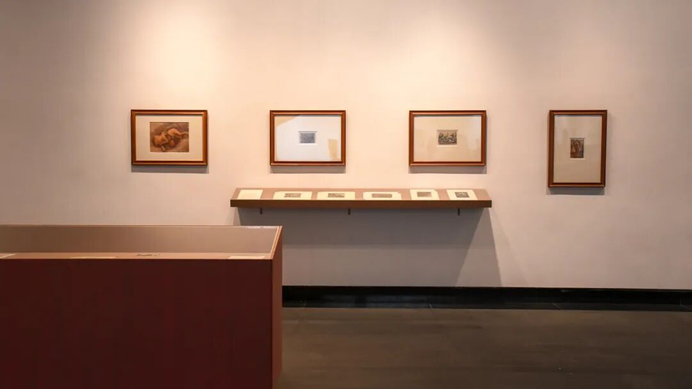
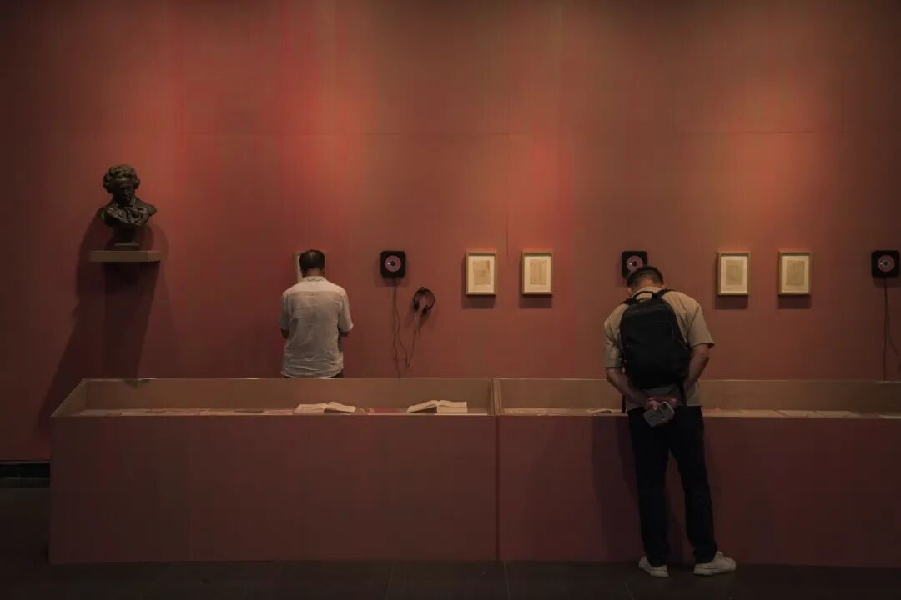

Lyon Choi (Cai Li'an 蔡里安) and Realist Narratives of Overseas Chinese in Southeast Asia in the First Half of the 20th Century
A digital archival exhibition on the life and works of a Chinese-Vietnamese sculptor, watercolourist, composer and educator whose journey traced the cross-cultural currents of the monsoon coast.
Since 2016, the Art Museum of the Guangzhou Academy of Fine Arts has organized a series of exhibitions on realism in modern Chinese art history. Building upon Guangdong's deep history of overseas Chinese migration, the museum has gradually turned its attention to an earlier generation of Chinese artists who lived abroad — some even born overseas — whose return to China profoundly shaped the modernization of Chinese art education and disciplinary foundations that endure to this day.
Lyon Choi (Cai Li'an, 1912–2005) was one of the founding faculty of the sculpture department at the Guangzhou Academy of Fine Arts. His 1945 sculpture Worker's Head was selected for the First National Art Exhibition of China in 1949 — the first work by any teacher or student of the Academy to receive this honour. His itinerant life was deeply intertwined with the anti-colonial movements of 20th-century Asia. His quiet, empathetic engagement with labourers and refugees, rendered through rigorous French academic sculptural technique, crystallized into a singular body of work.
Beyond grand narratives of masterpieces and great artists, there exists another art history — everyday, compassionate, quiet. When we read the margins together with the mainstream, we come closer to a truer history: how individuals, through art, withstood the surging tides of fate and era.
Chen Xiaoyang
September 15, 2023






When we look beyond cultural and national boundaries, we see a network of port cities connected by sea lanes. The communities that moved between these cities — through daily life and educational exchange — created deeper, more complex cross-cultural networks.
The monsoon keeps its promise.
Sail out and return with the seasons,
And the monsoon, faithful,
Brings your loved ones home.
The character xin (信) in the original Chinese exhibition title, Jifeng Youxin (季风有信), means "trust" or "promise." Along the monsoon coast of Southeast China, people made their living by the sea. Departure and return followed the rhythm of the monsoons, and communities held rituals to honour the winds. The monsoon's faithfulness was both a survival practice and an abiding belief.
Lyon Choi was not an isolated case. These artists, rarely in the spotlight, constitute another kind of art history — closer to lived experience, on the margins. They are the quiet, deep undercurrent of Sino-Western artistic exchange.